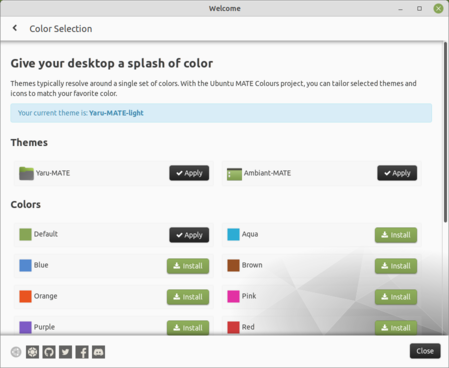

|  |
Accessible for everyone At the heart of the Ubuntu MATE philosophy is the belief that computing is for everyone. With advanced accessibility tools and options to change language, colour scheme and text size, Ubuntu MATE makes computing easy - whoever and wherever you are. Customization options Appearance Assistive technologies Language support |